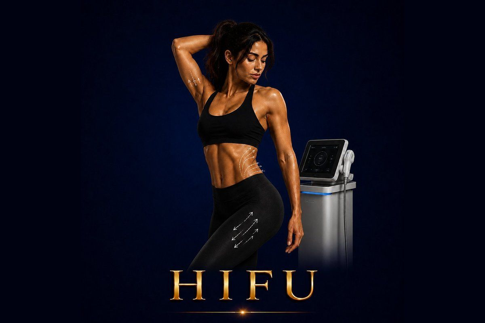

Body Shaping
Non-surgical body lifting with focused ultrasound. Tightens skin on the abdomen, arms, knees, buttocks, and thighs — no surgery, no needles, no downtime.
✓ Full medical content — verified for SEO and patient information.

About
HIFU Body is the body-specific version of HIFU (High-Intensity Focused Ultrasound) — the same technology used for non-surgical face lifting, but engineered with deeper applicators and higher-energy parameters for the thicker skin and larger surface areas of the body. HIFU works by delivering ultrasound energy in tiny, precise focal points beneath the skin's surface. The targeted tissue is heated to a temperature that triggers contraction of existing collagen and stimulates the production of new collagen and elastin. Because the energy bypasses the skin surface entirely, there's no damage to the outer layer — no peeling, no marks, no recovery time. Body HIFU applicators reach deeper than face applicators — typically 6mm, 9mm, and 13mm depths (versus 1.5mm, 3.0mm, and 4.5mm on the face). This is necessary because body skin is thicker and the structural layers requiring lifting are located deeper. The result is a gradual, natural-looking body skin tightening effect that develops over 2–3 months and continues to improve as new collagen forms.
Why It Works
The Process
90 minutes depending on the area treated: 1
Consultation & assessment Your doctor evaluates body skin laxity, identifies target areas, and determines the appropriate depths and intensity for your case. 2
Cleansing & preparation The treatment area is cleansed and ultrasound gel is applied to allow smooth contact and accurate energy transmission. 3
HIFU Body application The HIFU handpiece is moved across the treatment area
The device delivers focused ultrasound energy to one of three body depths — 6mm, 9mm, or 13mm — depending on the area and desired effect
You may feel brief warm pulses during energy delivery; mild discomfort is normal and well-tolerated, especially with body areas where skin sensation is less concentrated than the face. 4
Cooling & finishing The gel is removed and soothing skincare is applied
You can immediately return to your normal activities
3 months as new collagen forms
Some patients benefit from a single annual session per body area; others combine HIFU Body with smaller maintenance treatments
Who It's For
Safety First
Treatment Comparisons
HIFU Body vs. Morpheus8 Body Morpheus8 Body uses RF microneedling at the dermis level — best for stretch marks, skin texture, and body skin remodeling, with a few days of downtime. HIFU Body uses focused ultrasound to reach deeper tissue for non-surgical body lifting — stronger lifting effect, no downtime, but no stretch mark treatment. They're often combined for comprehensive body skin improvement.
Body FX uses surface RF + vacuum + electrical pulses for gentle fat reduction and skin tightening. HIFU Body works much deeper for stronger lifting and tightening. Different goals: Body FX for ongoing comfortable maintenance; HIFU Body for an annual deep lift.
BodyTite is a minimally invasive procedure (tiny incision, local anesthesia) that removes fat AND tightens skin in one procedure — strong results in one session with a few days of downtime. HIFU Body is fully non-invasive with no downtime but doesn't remove any fat. For patients with both fat and loose skin, BodyTite often delivers a more comprehensive result; for those with only loose skin (no excess fat), HIFU Body alone may be ideal.
A tummy tuck removes excess skin completely and tightens abdominal muscles — needed for patients with substantial skin redundancy or post-pregnancy muscle separation. HIFU Body tightens existing skin but cannot remove excess skin. For mild post-pregnancy abdomen, HIFU Body is an excellent non-surgical option; for severe cases, surgery is still the right answer.
Tesla Former builds muscle. HIFU Body tightens skin. Completely different layers and goals — often combined: Tesla Former for muscle, HIFU Body for skin on top.
Investment
HIFU Body
The price of a HIFU Body session at Hollywood Clinic is set after a free consultation and depends on: Treatment area — abdomen, arms, thighs, knees, buttocks, single area or multiple areas.
Final pricing is determined after a free consultation, because every case is different.
Book Free ConsultationWhy Hollywood Clinic
Dr. Marwa Magdy — Aesthetic Dermatologist & Advanced Injector. Advanced HIFU experience for both face and body lifting, and an expert in combination protocols (HIFU Body + Morpheus8 Body, HIFU Body + injectables for post-pregnancy plans)
Dr. Rana Safwat — Dermatology, Laser & Non-Surgical Aesthetics Consultant, 12+ years of experience. Ideal for patients who want HIFU Body as part of a long-term anti-aging and body plan with structured maintenance
FAQ